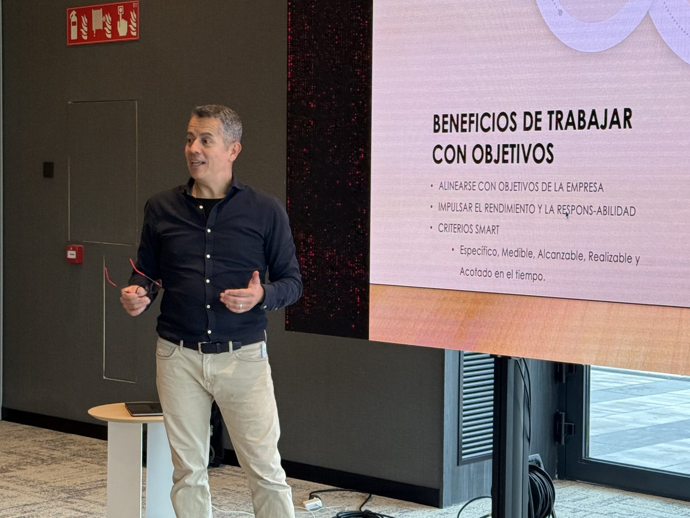

No se trata de qué formato de coaching o consultoría prefieres — se trata de qué reto te ha traído hasta aquí. Estas son las áreas donde más impacto genero; más abajo, las formas concretas en las que podemos trabajarlas juntos. It’s not about which coaching or consulting format you prefer — it’s about what challenge brought you here. These are the areas where I create the most impact; further down, the concrete ways we can work through them together.
Suelo empezar a trabajar con directivos en un momento concreto: la transición a un rol de mayor responsabilidad, el liderazgo de un proceso de transformación, el escalado de la organización, o la consolidación de un estilo de liderazgo propio tras varios años en el cargo. Si te reconoces en alguno de estos momentos, esto es en lo que puedo ayudarte: I typically start working with executives at a specific moment: the transition into a role of greater responsibility, leading a transformation process, scaling the organization, or consolidating your own leadership style after several years in the role. If you recognize yourself in any of these moments, here’s where I can help:
Cuando la operativa diaria absorbe todo tu tiempo, la visión de 3 años se queda en la lista de pendientes. Trabajamos para que recuperes el criterio necesario para decidir con perspectiva, no solo para reaccionar a lo urgente — especialmente en momentos de transformación o escalado, donde una mala decisión estratégica cuesta mucho más que en tiempos estables. When daily operations absorb all your time, the 3-year vision stays on the to-do list. We work to recover the judgment you need to decide with perspective, not just react to what’s urgent — especially during transformation or scaling, when a poor strategic call costs far more than in stable times.
Llegar a un rol de mayor responsabilidad no siempre viene con la autoridad formal para respaldarlo desde el primer día. Trabajamos tu capacidad de influir en las conversaciones que realmente mueven decisiones — con tu equipo, tus pares y el comité de dirección — sin depender solo del cargo que ocupas. Reaching a role of greater responsibility doesn’t always come with the formal authority to back it up from day one. We work on your ability to influence the conversations that actually move decisions — with your team, your peers and the leadership committee — without relying solely on your title.
Un equipo que ejecuta bien porque tú estás ahí no es lo mismo que un equipo que ejecuta bien sin ti. Trabajamos cómo desarrollar personas y estructuras que sostengan resultados de forma autónoma — algo especialmente crítico cuando lideras una transformación o escalas la organización más rápido de lo que puedes supervisar personalmente. A team that executes well because you’re there is not the same as a team that executes well without you. We work on developing people and structures that sustain results autonomously — especially critical when you’re leading a transformation or scaling the organization faster than you can personally oversee.
La resistencia al cambio no es un obstáculo a eliminar — es información sobre lo que aún no está claro o no se ha comunicado bien. Trabajamos cómo liderar procesos de transformación real, convirtiendo esa resistencia (la tuya y la de tu organización) en parte del proceso, no en un enemigo a vencer. Resistance to change isn’t an obstacle to eliminate — it’s information about what’s still unclear or poorly communicated. We work on leading real transformation processes, turning that resistance (yours and your organization’s) into part of the process, not an enemy to defeat.
Cuanto mayor es tu responsabilidad, más peticiones legítimas compiten por tu tiempo — y decir que sí a todas es, en la práctica, decir que no a lo importante. Trabajamos una estrategia real de foco: qué dejar de hacer, a qué decir que no con criterio, y cómo proteger el tiempo que de verdad mueve resultados. The greater your responsibility, the more legitimate requests compete for your time — and saying yes to all of them is, in practice, saying no to what matters. We work on a real focus strategy: what to stop doing, what to say no to with judgment, and how to protect the time that actually moves results.
Consolidar tu estilo de liderazgo tras varios años en el cargo pasa, muchas veces, por dejar de tener que demostrar tu valor en cada conversación. Trabajamos cómo tu reputación y tu forma de liderar se reconozcan de forma consistente, dentro y fuera de tu organización, sin depender de venderte constantemente. Consolidating your leadership style after several years in the role often means no longer having to prove your value in every conversation. We work on making your reputation and your way of leading consistently recognized, inside and outside your organization, without constantly having to sell yourself.
Así es como podemos trabajar cualquiera de estas áreas juntos: Here’s how we can work through any of these areas together:
El proceso completo de 4 fases, a medida. Para C-level, managers y altos potenciales que ya son buenos y quieren llegar a un nuevo nivel. The full 4-phase process, tailored to you. For C-level executives, managers and high potentials who are already good and want to reach a new level.
Aplicación del método Scaling Up (Rockefeller Habits) de Verne Harnish para escalar tu negocio: estrategia, personas, ejecución y caja — con foco en Movilización y Acción sostenible. Applying Verne Harnish’s Scaling Up method (Rockefeller Habits) to scale your business: strategy, people, execution and cash — with a focus on Mobilization and sustainable Action.
Foco en Movilización, aplicado a equipos completos — de la teoría a la ejecución real en la sala. A Mobilization focus, applied to full teams — from theory to real execution in the room.
Una pyme tecnológica de 12 personas, en plena reinvención de la venta de impresoras B2B hacia soluciones audiovisuales y TIC. El reto no era solo operativo — el cambio real tenía que empezar por la dirección. Con el método Scaling Up de Verne Harnish (One Page Strategic Plan, Rockefeller Habits, KPIs por persona), en tres años: A 12-person tech company, in the middle of reinventing itself from B2B printer sales into audiovisual and IT solutions. The real challenge wasn’t just operational — the change had to start at the top. Using Verne Harnish’s Scaling Up method (One Page Strategic Plan, Rockefeller Habits, per-person KPIs), in three years:
+45%
Crecimiento en facturación y resultadoGrowth in revenue and results
“El mayor aprendizaje fue comprender que el trabajo duro no se puede delegar. Solo desde la dirección se puede alinear al equipo y definir una estrategia coherente… Hoy nuestra empresa está más alineada que nunca, y con una energía renovada.” “The biggest lesson was understanding that the hard work can’t be delegated. Only from the top can you align the team and define a coherent strategy… Today our company is more aligned than ever, with renewed energy.”
— Dirección General, Canon Barcelona 22@— General Management, Canon Barcelona 22@
El torneo de tenis en silla de ruedas de Barcelona, al que aporto estrategia y escalado sin coste, por convicción. Aplicando la misma disciplina que uso con clientes: Barcelona’s wheelchair tennis tournament, where I contribute strategy and scaling at no cost, out of conviction. Applying the same discipline I use with clients:
ITF1000
Categoría Super Series — 1 de solo 5 sedes en el mundoSuper Series category — 1 of only 5 hosts in the world
La categoría más alta del circuito fuera de los Grand Slam, alcanzada en dos años de colaboración. The highest category on the circuit outside the Grand Slams, reached in two years of collaboration.
Conoce el torneo →Learn about the tournament →También he acompañado proyectos de consultoría y desarrollo de negocio con Audiotec Cataluña, Diamond Seeds, Construcciones Luque, Nextlane y SmartPoint. I’ve also supported consulting and business development projects with Audiotec Cataluña, Diamond Seeds, Construcciones Luque, Nextlane and SmartPoint.
“Mauro helped me adjust my leadership style to different behaviors and circumstances, being more reflexive than passionate. He taught me to be more generous, assertive, and to listen more than I speak — empathy is better than sympathy.”
José María Odriozola — Vicepresidente, Europa Occidental, sector logística internacional
José María Odriozola — Vice President, Western Europe, international logistics sector
“Mauro has aided me to work on difficult areas of development by approaching it unjudgementally, favouring an open and deep conversation. I feel I have achieved significant personal and professional growth under his coaching.”
Directora/Director Ejecutivo — Sector banca
Executive Director — Banking sector
“Fue una experiencia transformacional personal. Me ayudó a entenderme mejor a mí mismo y al entorno profesional. Nos permitió centrarnos en mis fortalezas y prioridades, resultando en un aumento de confianza y rendimiento.”
“It was a transformational personal experience. It helped me better understand myself and my professional environment, allowing me to focus on my strengths and priorities, resulting in increased confidence and performance.”
Xavier Urbaneja — Head of Market Segment, Brand Protection
“My coach Mauro Delgado surprised me positively, especially on emotional intelligence. He has helped me a lot on how to deal with problems with resilience and optimism, motivating my team and above all myself with self-control, esteem and positivity.”
Javier Amor — Technical Manager, SICPA Spain SLU
“The coaching pathway with Mauro has been way wider than expected — a journey of self-awareness, reflection, recognition and transformation. The tools we used, focused on communication and people management, made me put learnings into practice in real situations almost every day.”
Andrea Palomino — Regional Sales Manager, sector farmacéutico
Andrea Palomino — Regional Sales Manager, pharmaceutical sector
En 6.000 horas de coaching ejecutivo he visto que el cambio que se sostiene sigue casi siempre la misma secuencia: primero claridad sobre lo que de verdad importa, luego impacto en cómo se percibe y comunica tu liderazgo, después la capacidad de movilizar a otros en la misma dirección, y solo entonces resultados que no se revierten al mes siguiente. A esa secuencia la llamo el Método CIMA, y es el hilo conductor de cada proceso de coaching que hago.
In 6,000 hours of executive coaching, I’ve seen that change which lasts almost always follows the same sequence: first clarity about what truly matters, then impact in how your leadership is perceived and communicated, then the ability to mobilize others in the same direction, and only then results that don’t reverse the following month. I call that sequence the CIMA Method, and it’s the thread running through every coaching process I run.
— Mauro Delgado
Diagnóstico inicial (incluye el Termómetro de Impacto Directivo), foco real, qué importa de verdad ahora. Initial diagnostic (includes the Executive Impact Snapshot), real focus, what truly matters right now.
Cómo se percibe y comunica tu liderazgo: influencia, persuasión, marca personal. How your leadership is perceived and communicated: influence, persuasion, personal brand.
Extender ese impacto a tu equipo y tu organización: alto rendimiento, gestión del cambio. Extending that impact to your team and organization: high performance, change management.
Anclar el cambio, seguimiento entre sesiones, medir el resultado real. Anchoring the change, follow-up between sessions, measuring the real result.

Líderes ya exitosos que buscan llegar a un nuevo nivel, no solo profesional sino personal. Ya son buenos en lo que hacen — el trabajo es ayudarles a ser excepcionales. Already successful leaders looking to reach a new level, not just professionally but personally. They’re already good at what they do — the work is helping them become exceptional.
Habitualmente 6 meses, siguiendo el arco completo del Método CIMA. Otros formatos son posibles bajo consulta. Usually 6 months, following the full arc of the CIMA Method. Other formats are possible on request.
Mayoritariamente online, con clientes de todo el mundo. Presencial disponible en Barcelona o coincidiendo con viajes. Mostly online, with clients around the world. In-person available in Barcelona or coinciding with travel.
Trabajo mejor con líderes que ya tienen resultados demostrados y buscan el siguiente nivel — no con quienes buscan apagar una crisis puntual o necesitan supervisión constante para ejecutar. Si tu equipo o tu negocio ya funcionan y el techo eres tú, probablemente encajemos. Si buscas una solución rápida sin implicarte en el proceso, no soy la persona adecuada. I work best with leaders who already have proven results and are looking for the next level — not with those looking to put out a one-off fire or who need constant supervision to execute. If your team or business already works and you are the ceiling, we’re likely a fit. If you’re looking for a quick fix without engaging in the process, I’m not the right person.
En la sesión estratégica inicial, sin coste. Hablamos de tu situación real, te doy una primera perspectiva útil la tengamos o no, y ambos decidimos con información — no hay compromiso ni presión por avanzar. Si no encajamos, te lo digo directamente y, si puedo, te oriento hacia otra opción. In the initial strategic session, at no cost. We talk through your real situation, I give you a useful first perspective whether we move forward or not, and we both decide with real information — no commitment or pressure to continue. If it’s not a fit, I’ll tell you directly and point you toward another option if I can.
Reserva una conversación inicialBook an initial conversation